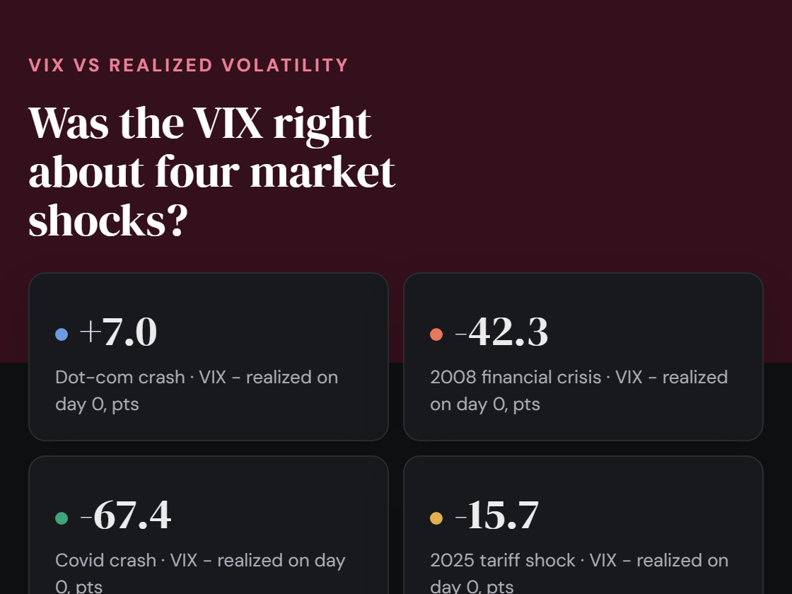
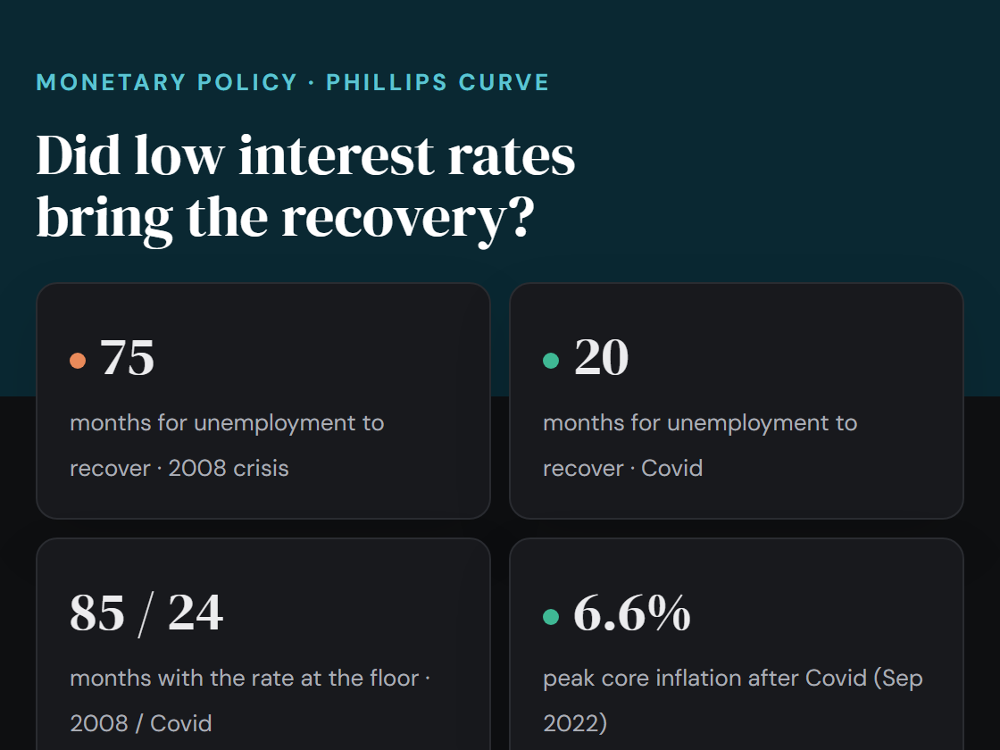
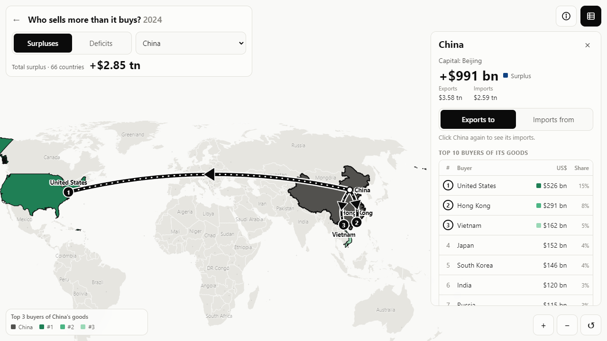

A learning lab for macroeconomics, machine learning and quantitative trading. Pick an experiment below.

Was the VIX right? Its forecast against the volatility that actually followed, around the dot-com crash, 2008, Covid and the 2025 tariff shock.

ECB and Fed policy rates, and whether near-zero rates brought a recovery in 2008 and Covid (Phillips curve view).

Who sells more to the world than it buys? Every country's trade balance in goods, and arrows to its top export and import partners.
What France and Italy pay over Germany to borrow: 10-year spreads since 1999, credit default swaps, and the October 2026 protests in both countries.